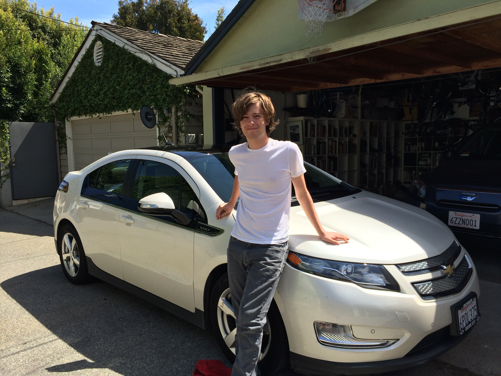

cts | Volt a Day | The Sad End of the Volt
April 28, 2014
 Three Happy Years
Three Happy Years
That was a great car.
When I was asked in Detroit if I thought the Volt would be a good car for me, I answered very honestly and said, "As long as I can do my weekly driving without the internal combustion engine kicking on, I will consider it a success."
We put 21,000 miles on the 2011 Volt I leased three years ago. I filled it fewer than ten times, and the tank is a tiny 9.3 gallons. That seems unreal for a serial hybrid and, in fact, the ICE had to kick on to perform it's "maintenance cycle" because I used it so infrequently.
Nell has a BMW i3 on order. We drove it up in San Francisco when we were there for a weekend. It's a perfect car for her, a lot of the zip of her ActiveE and a more polished platform that is built from the start as an electric vehicle.
That means her current RAV4 EV will become my car, until I can figure out a way to get out of the (sort of expensive) lease. It's fine for a business car (with half the lease being written off), but a little much for what I would want since I drive so little.
 Little Brother Blue
Little Brother Blue
In the meantime, since the Volt had to be returned, we leased a Chevy Spark EV for three years. It is a perfect car for Rudy, who is just starting out driving, and it will be a good car for Dexter as well (who might get his license a little sooner than Rudy did, he tends to be a little more independent and nothing encourages independence like being able to drive yourself somewhere in Los Angeles). It has ten airbags, goes 80 miles on a charge and takes up less space in the garage.
So far we have had: an GM EV, the GM EV Gen II, the original RAV4 EV, the Chevy Volt, the BMW ActiveE, and now the Chevy Spark EV. Right now there are just two fully electric cars in the garage. We'll see if we can make do that way or if we need something with a gas engine for longer trips.

{kind=link}